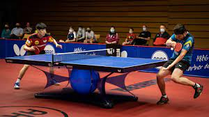
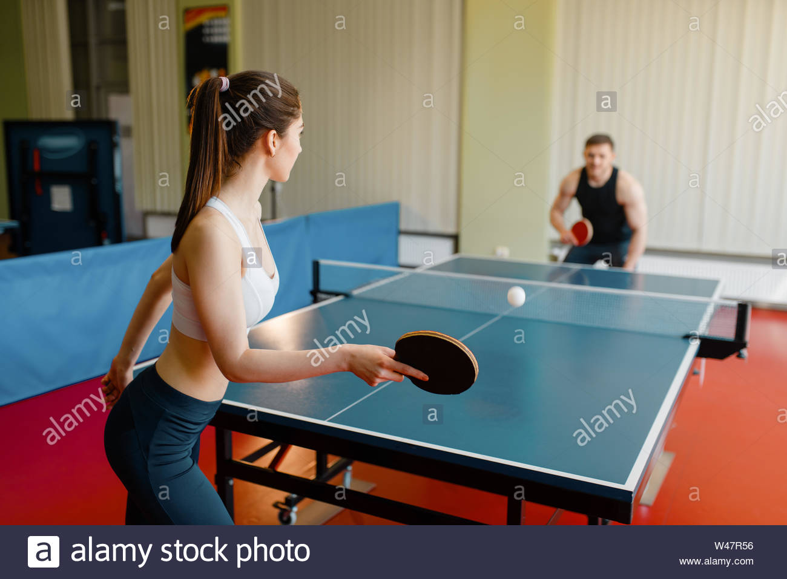

A modern asztalitenisz őshazája Anglia. Mivel a 19. század második felében Angliában a tenisz egyre nagyobb népszerűségre tett szert, felmerült az igény, hogy azt valamilyen módon bevigyék a társasjátékok gyakorlására alkalmas arisztokrata szalonokba, majd az egyetemekre, iskolákba, klubokba zárt, fedett helyiségekbe. Ez az igény hozta létre a rakettet utánzó pingpongot és a lawn-tennis szabályait átvevő table-tennist az 1880-as években.
 